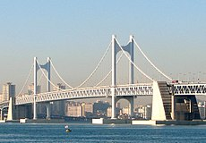
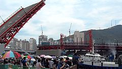
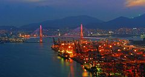
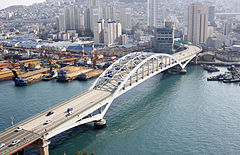
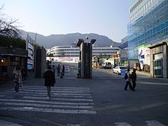
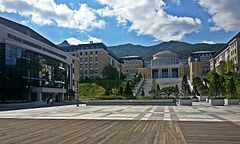
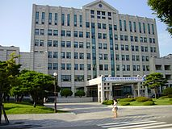

Пусан

| Город-метрополия | |||||
| Пусан | |||||
| |||||
| Страна | |||||
|---|---|---|---|---|---|
| Статус |
Город-метрополия (кванъёкси) | ||||
| Регион | |||||
| Внутреннее деление |
15 муниципальных районов, 1 уезд | ||||
| Мэр | |||||
| Прежние названия |
Кочхильсангун (VI век), Тоннэ (757 — 1910 гг.) | ||||
| Площадь |
768,43 км² | ||||
| Высота центра |
30 м | ||||
| Тип климата |
влажный субтропический | ||||
| Официальный язык | |||||
| Население | |||||
| Плотность |
4444 чел./км² | ||||
| Часовой пояс | |||||
| Телефонный код |
+82 51 | ||||
| Почтовый индекс |
600-010, 619-963 | ||||
| Официальный сайт | |||||
Пуса́н (кор. 부산?, 釜山?) — город в Республике Корея. Является городом-метрополией (до 1995 — городом прямого подчинения).
Второй по величине город страны, после Сеула. Крупнейший порт страны, известный как «Морская столица Республики Корея». Официальное название города — Город-метрополия Пусан (кор. 부산광역시?, 釜山廣域市? Пусан-кванъёкси). Пусан расположен на юго-восточной оконечности Корейского полуострова на берегу Корейского пролива. Наиболее густо застроенные районы расположены в нескольких узких долинах между реками Нактонган и Суёнган, горы служат естественными границами некоторых городских районов.
В 2002 году в Пусане проводились Азиатские игры и чемпионат мира по футболу FIFA World Cup, а в 2005 году город стал столицей форума АТЭС. 14 ноября 2005 года Пусан вместе с Ульсаном был объявлен претендентом на проведение Олимпийских Игр 2028 года.
Пусан — один из современнейших городов Азии. Город известен своими многочисленными небоскрёбами и другими архитектурными достопримечательностями. Здесь находится самый большой универмаг в мире — «Синсеге Сентум Сити» В городе также возводятся другие мегасооружения — небоскрёб «Сентум Лидерс Марк» и самый высокий офис в стране «Пусанский международный финансовый центр».
Содержание
[скрыть]Климат[править | править код]
Пусан находится в зоне влажного субтропического климата (Cfa по классификации климатов Кёппена). Очень высокая и очень низкая температура регистрируются редко. С мая по июль, поздней весной и ранним летом из-за эффекта океана в городе обычно холоднее, чем во внутренних областях полуострова. В конце лета и начале осени, с августа по сентябрь стоит жаркая, душная погода, в это время на город могут обрушиться тайфуны. 15 сентября 1959 супертайфун Сара прошёл по берегу города и вызвал катастрофический ущерб. 12 сентября 2003 года необычайно сильный тайфун Мэми также причинил значительный ущерб кораблям и зданиям, погибло 48 человек.
Октябрь и ноябрь — наиболее комфортное время в Пусане с ясным небом и приятной температурой. Зима холодная и сравнительно сухая с сильными ветрами, но значительно более мягкая, чем в других частях Кореи, за исключением Чеджудо и нескольких островов южного побережья. Пусан и прилегающие территории имеет наименьшее количество снега по сравнению с другими регионами Кореи из-за своего местоположения. Снег выпадает в среднем лишь около 6 дней в году. Даже небольшие накопления снега могут сильно навредить этому городу из-за гористой местности и отсутствия у местных автомобилистов навыков езды по снегу.
| Климат города Пусан (1971-2000) | |||||||||||||
|---|---|---|---|---|---|---|---|---|---|---|---|---|---|
| Показатель | Янв. | Фев. | Март | Апр. | Май | Июнь | Июль | Авг. | Сен. | Окт. | Нояб. | Дек. | Год |
| Средний максимум, °C | 7,6 | 9,1 | 13,0 | 17,8 | 21,5 | 24,0 | 27,3 | 29,2 | 26,1 | 22,1 | 16,1 | 10,3 | 18,7 |
| Средняя температура, °C | 3 | 4,3 | 8,3 | 13,4 | 17,4 | 20,5 | 24,2 | 25,7 | 22,1 | 17,3 | 11,3 | 5,6 | 14,4 |
| Средний минимум, °C | −0,7 | 0,5 | 4,6 | 9,7 | 14,0 | 17,7 | 21,9 | 23,2 | 19,2 | 13,7 | 7,6 | 1,8 | 11,1 |
| Норма осадков, мм | 38 | 45 | 86 | 136 | 154 | 223 | 259 | 238 | 167 | 62 | 60 | 24 | 1492 |
| Источник: Korea Meteorological Administration | |||||||||||||
Административное деление[править | править код]
В административные границы Пусана входят 15 муниципальных районов (-ку, -гу), состоящие из 209 кварталов, и 1 уезд (-гун).
| Название | Хангыль | Площадь, км² | Население, чел | |||||
|---|---|---|---|---|---|---|---|---|
| Муниципальные районы | ||||||||
| Пукку | 북구 | 39.44 | 313,553 | |||||
| Пусанджингу | 부산진구 | 29.69 | 398,174 | |||||
| Тонгу | 동구 | 9.78 | 102,859 | |||||
| Тоннэгу | 동래구 | 16.63 | 283,636 | |||||
| Кансогу | 강서구 | 180.24 | 66,269 | |||||
| Кымджонгу | 금정구 | 65.17 | 257,662 | |||||
| Хэундэгу | 해운대구 | 51.46 | 429,477 | |||||
| Чунгу | 중구 | 2.82 | 50,555 | |||||
| Намгу | 남구 | 26.77 | 301,904 | |||||
| Сахагу | 사하구 | 40.96 | 362,697 | |||||
| Сасангу | 사상구 | 36.06 | 261,673 | |||||
| Согу | 서구 | 13.88 | 127,068 | |||||
| Суёнгу | 수영구 | 10.20 | 179,208 | |||||
| Йондогу | 영도구 | 14.13 | 148,431 | |||||
| Йонджегу | 연제구 | 12.08 | 213,453 | |||||
| Уезд | ||||||||
| Киджан | 기장군 | 218.04 | 103,762 | |||||
История[править | править код]
По «Самгук саги», город возник в начале нашей эры под названием Кочхильсангук (или Кочхильсангун), Тонногук, Чансангук или Нэсангук, а в 757 году Кончхильсангун получил новое название — Тоннэ[2]. Название Пусан впервые упоминается в географическом описании «Синджын тонгук ёджи сыннам» в эхопу Чосон[2]. По «Синджын тонгук ёджи сыннаму» слово Пусан является названием порта и рыбацкой деревни на юге городского округа Тоннэ, а произошло оно от слововосочетания «горшок-гора» по форме горы, у которой находится деревня[2]. Порт в этой деревне назывался Пусанпхо.
С начала XV века и до 1592 года Пусанпхо в Тоннэ являлся основным торговым портом страны. Прежде всего через него велась торговля с Японией. С захвата города в 1592 году японскими войсками под командованием Тоётоми Хидэёси началась Имдинская война. С 1598 по 1876 Пусан был закрыт для внешней торговли, затем стал первым городом Кореи, открывшимся ей, однако до 1883 года торговал только с Японией. После открытия порта японцы возвели в Пусане свою улицу, а затем и свой квартал. С 1910 года перешёл под протекторат Японии и территория японского квартала отделилась от Тоннэ, став независимом городом под названием Пусан, а Тоннэ получил нижний статус — уезд.
Пусан превратился в крупный торговый и промышленный центр. Он был связан железнодорожным паромом с японским городом Симоносеки. С 1925 Пусан — административный центр провинции Кёнсан-Намдо[3]. Во время Корейской войны 1950-53 являлся временной столицей Республики Корея, так как был самой отдаленной от границы КНДР точкой, а также главной военной базой США и их союзников на территории Кореи. С 4 августа по 18 сентября 1950 года Пусанский периметр оставался последним рубежом обороны Южной Кореи. После войны до 1963 года оставался центром провинции, затем стал городом прямого подчинения, присоединив большинство территории Тоннэ к себе, а с января 1995 — городом-метрополией[4].
Экономика[править | править код]
В уезде Киджан находится крупнейшая в Восточной Азии АЭС «Кори». На западе Пусана находится завод компании Renault Samsung Motors.
Финансы[править | править код]
В Пусане находятся Корейская биржа и Пусанский международный финансовый центр.
Транспорт[править | править код]
Порт Пусан — крупнейший в Республике Корея, доступен для судов водоизмещением до 50 тыс. тонн, длиной до 330 метров и осадкой до 12,5 метров[5].
Имеются также пассажирский водный «трамвай», железнодорожный узел, развитая система автобусного транспорта и такси. В Пусане расположен самый длинный мост Южной Кореи — Кванан. Понённо, первая городская автомагистраль в городе и стране, проходит с севера на юг.
На западе города находится международный аэропорт Кимхэ. Прямым авиасообщением Пусан связан с российским городом Владивостоком. В Пусане действует метрополитен.

Электропоезд первой линии метро

Культура[править | править код]
Театры[править | править код]

Перечень театров Пусана:
- Пусанский культурный центр;
- Пусанский национальный центр кугака;
- Зал граждан Пусана;
- Культурный центр Кымджон;
- Пусанский оперный театр
Филармония[править | править код]
- Пусанская муниципальная филармония
- Пусанская муниципальная традиционная филармония
- Пусанский оркестр каягымов
Фестивали[править | править код]
В Пусане ежегодно проходит большое количество фестивалей. Некоторые из них:
- Пусанский международный кинофестиваль
- Пусанский международный кинофестиваль фейерверков
- Пусанская биеннале
- Фестиваль порта Пусан
- Фестиваль Чагальчхи
Музеи[править | править код]
- Пусанский музей
- Национальный морской музей — крупнейший морской музей в Корее, третий по величине музей в стране
- Пусанский национальный музей науки
- Музей Покчхон
- Музей современной истории Пусана
- Пусанский художественный музей
- Морской музей естественной истории Пусана
- Выставочный зал раковинной кучи в Тонсам-доне
- Мемориальный музей временной столицы — резиденция президента Республики Корея во время Корейской войны.
- Пусанский музей рыбацкого посёлка
- Музей Чонгван
- Музей Пусанского национального университета
Библиотеки[править | править код]
В городе действует 31 библиотека, из них выделены:
- Муниципальная библиотека Чунан города-метрополии Пусан
- Муниципальная библиотека Симин города-метрополии Пусан
- Библиотека Суёнгу города-метрополии Пусан
Буддийские храмы[править | править код]
Церкви[править | править код]
- Храм святого Георгия Победоносца[6]
Этот раздел не завершён. Вы поможете проекту, исправив и дополнив его. |
Туризм[править | править код]
В городе имеется развитая туристическая инфраструктура. Пляжи Пусана привлекают иностранных и корейских туристов.
Парки и площади[править | править код]
- Парк Чунан — центральный парк города.
- Пусанский городской парк — крупный парк в центральной части города.
- Тхэджондэ — природный парк на юге района Йондо-гу. Там размещаются обсерватория, морской вокзал для круизных лайнеров, парк развлечений.
- Площадь Сон Санхёна — центральная площадь Пусана, самая большая площадь в Корее.
- Йондусан — парк в центре Пусана и самый старый парк города, известный также как «Вечный друг граждан Пусана».
- Пусанская башня — первая туристическая башня в стране, самый высокий маяк в Мире, один из символов города. Стоит в парке Йондусан.
Пляжи и курорты[править | править код]
Пусан называют[источник не указан 1276 дней] летней столицей Кореи, шесть его знаменитых пляжей привлекают туристов со всей страны. Роскошными отелями и дощатым настилом вдоль берега, предназначенным для прогулок и проведения карнавалов, известен Хэундэ. К числу достопримечательностей набережной Кваналли относится мост Кванан.
- Ончхонджан — естественный курорт с многочисленными банями, гостиницами, ресторанами, клубами и торговыми кварталами.
Известные улицы[править | править код]
На севере, около Пусанского национального университета, находятся студенческие театры, кафе, бары и рестораны, а также открытые площадки, на которых вечерами по выходным проводятся концерты и другие культурные мероприятия. Около Национального университета Пугён и Университета Кёнсон также много кафе, баров и ресторанов. В припортовом районе, известном как «улицы магазинов для иностранцев» (его очень часто называют «Texas Street», а русские моряки и корейцы-репатрианты из СССР предпочитают укороченый вариант — просто «Техас»), есть много предприятий, ориентированных на обслуживание экипажей иностранных судов и местного русскоязычного населения. Изначально район был местом компактного проживания китайцев, там и сейчас находятся китайские школы. Именно благодаря китайской диаспоре район в 1940-50 годах стал торговым и развлекательным центром, ориентированным, прежде всего, на американских солдат. Сегодня в «Техасе» все больше малого бизнеса выходцев из бывшего СССР: магазинчики, кафе, обменные пункты. Постепенно он приобретает репутацию русскоязычного района[источник не указан 1276 дней].
Горы[править | править код]
Гора Кымджонсан на севере — популярное место среди местных любителей активного отдыха. На этой горе находится Кымджонсансон, самая большая крепость на Корейском полуосторове, и Помоса, самый большой буддистский монастырь города и один из старейших буддийских храмов в стране.
Исторические места[править | править код]
- Тоннэыпсон — крепость времён династии Чосон в районе Тоннэ-гу.
- Кымджонсансон — самая большая крепость в Корее. Расположена на горе Кымджонсан.
- Чхуннёльса — святилище, где хранятся поминальные таблички в честь павших корейских патриотов во время японских вторжений на Корею.
- Внешняя крепость в Пусанджине — крепость, которая была построена в 1593 году японским генералом Мори Тэрумото во время японских вторжений на Корею.
- Вэсон в Чуксон-ни, Киджан — крепость, которая была построена в 1593 году японским генералом Курода Нагамасой во время японских вторжений на Корею.
- Помоса — один из самых старинных и больших храмов в стране.
- Мост Йондо — первый и единственный разводной мост в стране и один из символов города.
- Президентская резиденция временной столицы — резиденция президента Республики Корея во время Корейской войны.
- Раковинная куча в Тонсам-доне — археологический памятник, представляющий собой мусорную кучу на западном берегу района Йондо-гу.
Мосты[править | править код]
Пусан известный как «Город мостов»[7].
- Мост Кога
- Мост Ыльсукто
- Мост Намхан
- Мост Йондо — первый и единственный разводной мост в стране и один из символов города.
- Мост Пусан
- Мост Пусанхан (буквально «Мост порта Пусан») — автомобильный мост через порт Пусан.
- Мост Кванан — второй по длине мост в стране и один из символов города и района Суёнгу.
|  |  |  |  |
| Кванан-тэгё | Йондо-тэгё, первый и единственный разводной мост в стране. | Пусанхан-тэгё | Пусан-тэгё |
Гимн[править | править код]
С 15 июня 1984 года — официальный муниципальный гимн города прямого подчинения Пусан[8] — песня кор. 부산찬가?, 釜山讚歌?. Автор слов — Юн Пхёнвон (кор. 윤평원?, 尹平遠?), музыки — Ли Бомхи (кор. 이범희).
Впервые исполнен и записан певицей Юн Синэ[ko][8] (윤시내). C 25 сентября активно распространялся муниципальным правительством на различных носителях, продвигался вещательными СМИ, проигрывался на спортивных мероприятиях и т. п.[8]
Высшее образование в Пусане[править | править код]
Университеты[править | править код]
- Пусанский университет
- Пусанский университет иностранных языков
- Университет Пугён
- Морской университет Кореи
- Пусанский педагогический университет
- Университет Тона
- Университет Тоный
- Университет Кёнсон
- Университет Силла
- Университет Тонсо
- Университет Тонмён
- Университет Консин
- Пусанский католический университет
- Университет Ёнсан
|  |  |  |
| Пусанский университет | Пусанский университет иностранных языков | Универсиитет Пугён |
Спорт[править | править код]
В 2002 году Пусан стал столицей XIV летних Азиатских игр и одним из мест проведения чемпионата мира по футболу.
Главный стадион Азиады, построенный для Летних Азиатских игр 2002 года и чемпионата мира по футболу.
Медицинские учреждения Пусана[править | править код]
Международные отношения[править | править код]
Города-побратимы[править | править код]
 Гаосюн, Китайская Республика (1966)
Гаосюн, Китайская Республика (1966) Лос-Анджелес, США (1967)
Лос-Анджелес, США (1967) Симоносеки, Япония (1976)
Симоносеки, Япония (1976) Барселона, Испания (1983)
Барселона, Испания (1983) Рио-де-Жанейро, Бразилия (1985)
Рио-де-Жанейро, Бразилия (1985)- Фукуока, Япония (1989)
 Владивосток, Россия (1992)
Владивосток, Россия (1992)- Шанхай, Китай (1993)
- Сурабая, Индонезия (1994)
 Штат Виктория, Австралия (1994)
Штат Виктория, Австралия (1994)- Хошимин, Вьетнам (1995)
- Тихуана, Мексика (1995)
 Окленд, Новая Зеландия (1996)
Окленд, Новая Зеландия (1996)- Вальпараисо, Чили (1999)
 Монреаль, Канада (2000)
Монреаль, Канада (2000)- Западно-Капская провинция, ЮАР (2000)
 Стамбул, Турция (2002)
Стамбул, Турция (2002)- Хоккайдо, Япония (2005)
- Дубай, ОАЭ (2006)
- Чикаго, США (2007)
- Манила, Филиппины (2008)
- Санкт-Петербург, Россия (2008)
Города-партнёры[править | править код]
- Шэньчжэнь, Китай (2007)
- Тяньцзинь, Китай (2007)
- Осака, Япония (2008)
- Куала-Лумпур, Малайзия (2009)
- Чунцин, Китай (2010)
 Бангкок, Таиланд (2011)
Бангкок, Таиланд (2011)
Галерея[править | править код]
Мэрия Пусана

{kind=link}
{kind=link}
{kind=link}
{kind=link}
{kind=link}
{kind=link}
{kind=link}
{kind=link}
{kind=link}
{kind=link}
{kind=link}
{kind=link}
{kind=link}
{kind=link}
{kind=link}
{kind=link}
{kind=link}
{kind=link}
{kind=link}
{kind=link}
{kind=link}
{kind=link}
{kind=link}
{kind=link}
{kind=link}
{kind=link}
{kind=link}
{kind=link}
{kind=link}
{kind=link}
{kind=link}
{kind=link}
{kind=link}
{kind=link}
{kind=link}
{kind=link}
{kind=link}
{kind=link}
{kind=link}
{kind=link}
{kind=link}
См. также[править | править код]
Примечания[править | править код]
- ↑ Republic of Korea. Cities (census population).
- ↑ Перейти к: 1 2 3 김 강식 (Ким Гансик). 조선 시대 행정과 국방의 중심, 동래 (Тоннэ — администрацивный и оборонный центр в эпоху Чосон) — «동래 역사와 문화재 교실 강의 교재» (Учебник для курса по истории и культурному наследию Тоннэ) (Пусан). 2016. — С. 56
- ↑ Пусан — статья из Большой советской энциклопедии.
- ↑ оф. сайт города.
- ↑ Лоция порта Пусан (Тихий океан) (рус.). Проверено 12 октября 2009. Архивировано 10 февраля 2012 года.
- ↑ Administrator. Храм святого Георгия Победоносца (Пусан) (рус.). mission-center.com. Проверено 31 марта 2018.
- ↑ 부산, 다리 또 하나 생기다
- ↑ Перейти к: 1 2 3 부산찬가 (кор.). — Ноты, текст и сведения о гимне Пусана на официальном сайте его муниципального правительства. Проверено 9 января 2013.
Ссылки[править | править код]
- Пусан: Добро пожаловать в Южную Корею!
- Официальный сайт города (англ.)
- Туристическая информация
- Отели города
- Пусанский Международный Кинофестиваль
{kind=link}
| [показать] Районы и уезд города-метрополии Пусан |
|---|